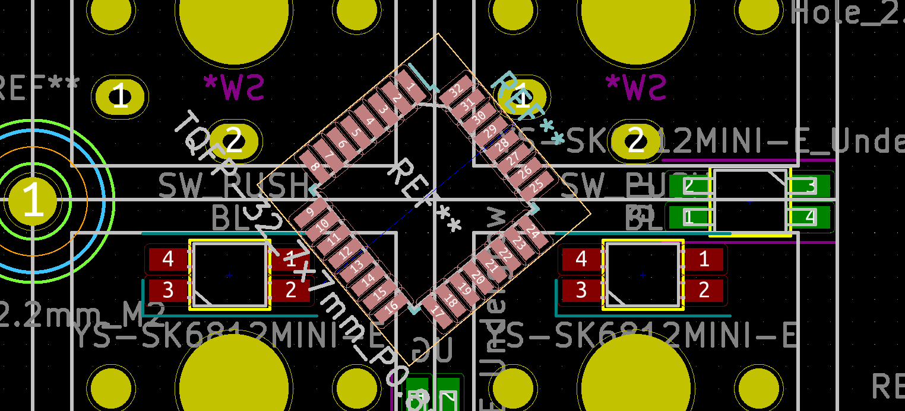
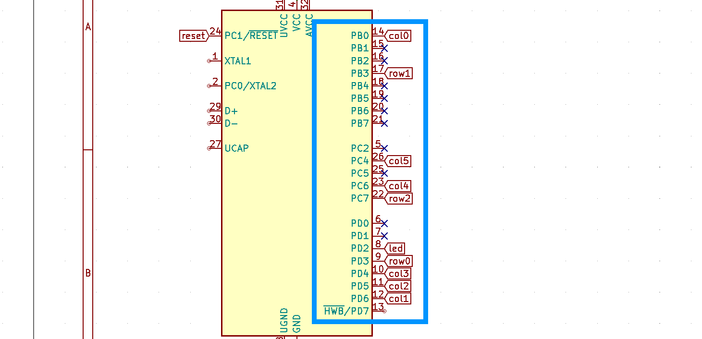
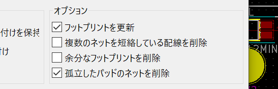
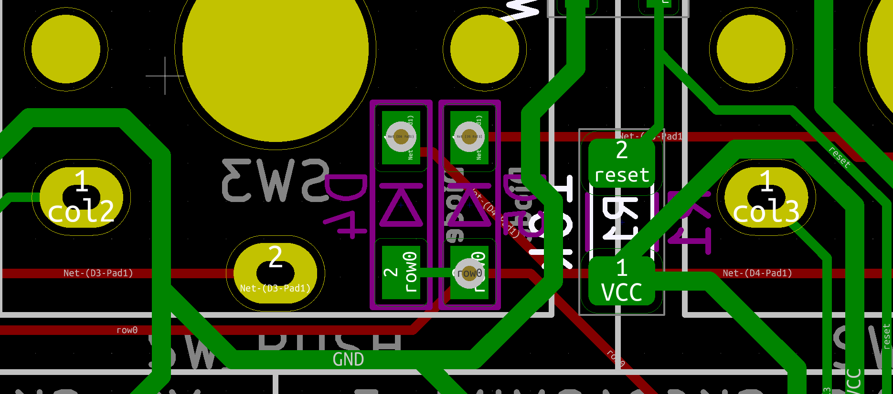
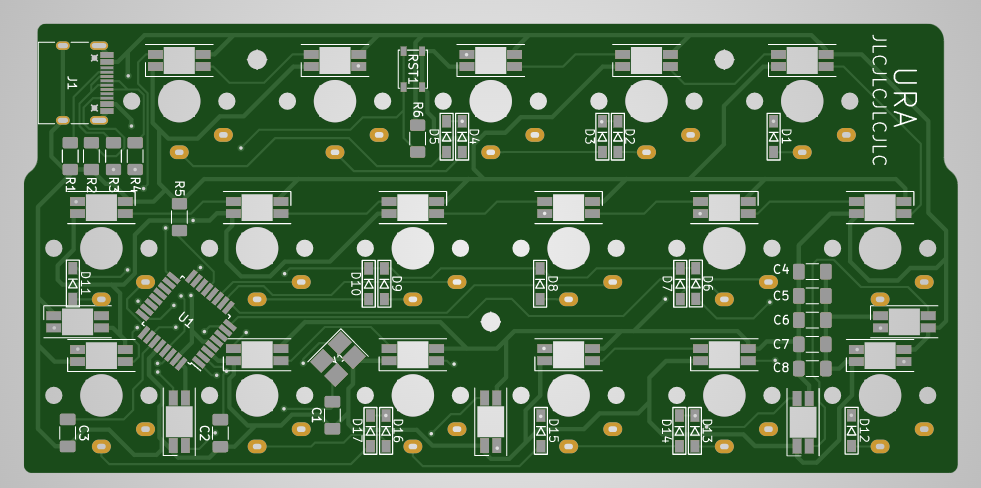
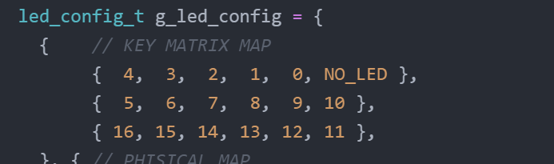
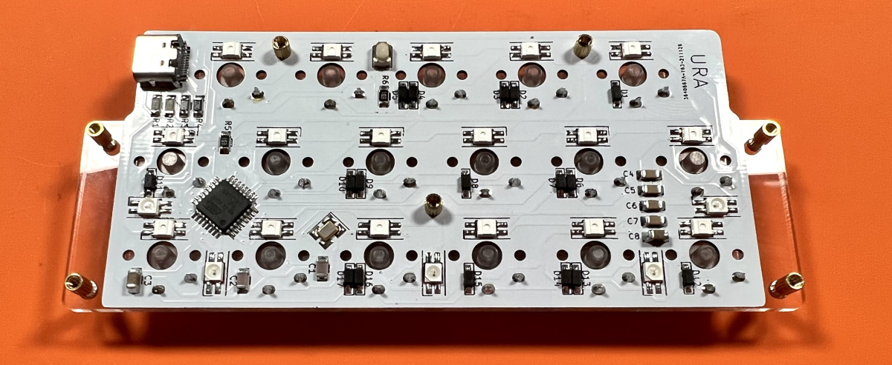

キーボード #3 Advent Calendar 2021 の22日目の記事です。
はじめまして、はやしたろうと申します。
キーボードをMCU直付けで作ろうと思ったときに日本語の記事が少なくてハードルが高く感じました。 キーパッドを作る過程をメモするついでに公開することでまとまった情報を共有しつつ、あわよくば詳しい人にダメ出しして貰おうと思って書きました。 基本的にはai03さんのPCBデザインガイドに沿って設計しています。
回路以外の部分も作りはじめから完成までの流れを書いてみました。 既にkicadを使っている人向けの内容ですが、これから設計を始めてみたい方にもキーボードができるまでの流れを感じ取ってもらえるかもしれません。 他人がどういう流れで作業をしているか見ることはあまりないと思うので楽しんでもらえたら嬉しいです。
さっそく回路を設計といきたいところですが、まずは基板をどうするかをおおまかに決めるためにPcbnewを起動します。
今回は17 x 18 mmの狭ピッチなのでグリッドの幅を1 mmにします。
一つ目のスイッチを(0, 0)に置いたら、複製して並べてレイアウトを決めます。 3行のキーパッドにしたいのですが、完全な格子だとぱっと見でどこに何があるかわからないので最上段は半キーずらしました。
大体のフットプリントはデフォルトのライブラリやfoostanさんのもの、keebioさんのものを改変して使っています。 キースイッチはChoc V1のホール以外を消して枠線も17 x 18 mmに変えています。 使うものだけを集めた自分用のライブラリを作ると管理がとても楽になります。
バックライトとアンダーグローを並べます。 仮置きなので大体で十分です。 アンダーグローはWS2812Bでもいいのですがはんだ付けのしやすいSK6812MINI-Eのフットプリントを逆向きにしたのものを用意して使いました。
MCUの場所を決めました。 手はんだに使えるATmega32には10 x 10 mmのATmega32U4（ProMicroに使われているもの）と7 x 7 mmのATmega32U2の2種類の大きさがあります。 1Uサイズのキーキャップしか使わないマクロパッドでU4を採用すると、それ用の余白を作るかバックライトを諦めるしかないので今回はU2を使います。 Package_QFPのTQFP-327x7ｍｍ_P0.8mmです。40度傾けるとギリギリ収まりました。
USB Type-Cのレセプタクルを配置します。 秋月電子さんのType-Cコネクタに対応しているのはConnector_USBのUSB_C_Receptacle_HRO_TYPE-C-31-M-12です。 USB2.0でランドの数が少ないとはいえ難易度が高いのでMicro-USBを使う方がいいかもしれません。
ここまで決まると配線が見えてきますがネジも先に決めておいた方がEeshemaとの往復回数が減ります。
ねじを通すためのホールを配置しました。 2.2mmのNPTH（導通しないただの穴）だけでなく、スペーサーの直径や2mm余白を付けた円を追加したフットプリントを作ると配線や外形のスペースを視覚的に捉えやすいです。
他のパーツは小さくて配置の自由度が高いのでファイルを保存して回路の設計に進みましょう。
Eeschemaを起動します。 MCU_Microchip_ATmegaライブラリのATmega32U2-AUを設置して、ひとまずVCCとGNDの配線を繋げてしまいます。
使えるピンは右側のPB0-PD6までで、フットプリントの6-26番にあたります（13,、24は別の用途があり使えません）。 今回は3x6のマトリクスなのでLEDも含めて10個使います。

仮置きしたMCUを回転や移動で調整しながら効率の良い配線になるように決めます（ここでMCUの表裏を間違えていて、あとでやり直しました）。

MCUに抵抗やコンデンサを繋げますが、このあたりは私の理解が乏しく説明があやふやになっています。シンボルはDeviceのライブラリにあります。
24番はリセットスイッチに繋げます。 スイッチがオフの時に安定させるためにに10 kΩのプルアップ抵抗を入れます。 アノテーションがズレるのが嫌いなのでリセットスイッチのシンボルは別に作っています。
XTAL1とXTAL2は水晶振動子に繋げます。 よくわからないのでPro Microと同じ16 MHzのFA238と22 pFのコンデンサで回路を構成していますが動いています。 私が発注したFA238は負荷容量が7 pFだったのですが、ちゃんと計算するとコンデンサの容量はもっと小さい方が良いみたいです。 こちらのWebサイトが参考になりました。
D+、D-はConnectorライブラリのUSB_C_Receptacle_USB2.0と繋げます。 間に22 Ωの抵抗を挟みます。 Type-C レセプタクルのCCは搭載されているデバイスがどんな役割の機器かを決めていて、キーボードでは5.1 kΩでプルダウンします。 VBUSとGNDも繋ぎましょう。
UCAPは1 μFのコンデンサを挟んでGNDに落とします。 HWBは10kΩでプルダウンします。ファームウェアを書き込むためらしいです。

VCCとGNDの間にコンデンサを挟みます。 デカップリングコンデンサといってノイズが減るようです。 コンデンサの値をどうするかは諸説あるようですが、私はこの組み合わせで動いています。
これでPro Micro相当の機能が実装できました。 結果だけ見るとややこしいですが順を追って実装すれば決して難しくはありません。
スイッチとダイオードのマトリクス、LEDを配線してホールのシンボルを置きます。 Pcbnewで仮置きしたことでLEDやネジ穴の個数、配線方向が明確になります。
すべての配置が終わったらアノテーション（パーツの番号振り）と配線チェックをしてシンボルにフットプリントを関連付けます。

フットプリントは仮置きで使ったものを指定します。 抵抗、コンデンサーは1206/3216サイズ、水晶振動子は3225サイズの表面実装型を使用しました。 これらはUSBレセプタクルやAtmega32u2と比べるとはんだ付けが簡単だったのでもう少し小さいパッケージのものにしたほうが配置が楽だったかもしれません。
ダイオードやリセットスイッチも表面実装を選ぶと表側に足が出ないので、トッププレートをメインボードに密着させることができます。 これがMCU直付けで設計することの一番のメリットだと思います。
ネットリストの生成をしたらファイルを保存してPcbnewに戻ります。

ネットリストを読み込むときは"余分なフットプリントを削除する"のチェックを外します。 仮置きが消えてしまったら慌てずに保存せず終了して開き直します。
反映されたフットプリントと仮置きを邪魔にならないところまで移動させて部品を配置していきます。 Eeshemaを表示しているとPcbnewで選択したフットプリントが赤く光るのでわかりやすいです。
Choc V1のLEDはスイッチの中央から4.7 mm上と決まっているので相対位置を使います。 LEDどうしの配線がスムーズにつながるように回転させながら置きます。
水晶振動子はMCUの出来る限り近くに配置します。 遠すぎると配線がコンデンサーになり前述の負荷容量の計算の、回路の寄生容量が変化します（が、おそらくキーボードの設計程度だと気にする必要がないと思います）。
残りの部品も配線を気にしつつ置いていきます。 ネジ穴の配置を少し変更しました。 終わったら仮置きは削除します。
簡単なアクリルのケースを作ります。 今回はPCBを1 mm厚で作りこんな感じの断面にします。
まずはトッププレートの形状を考えます。レイヤーはMargin（マゼンダカラー）に作りました。
プレートをアクリルで製造する場合、業者にもよりますが幅は2 mm程度までは細くできると思います。 狭ピッチの17 x 18 mmのキーキャップで形状ギリギリまで詰めてしまうと細すぎてしまうので、少し余白を付けました。 私はそこまでしませんがアクリルを切るレーザーの幅の分、さらに余白を取るのもいいと思います。 角は円弧で丸くしています。
トッププレートのアクリルは割れやすいのでスイッチで挟み込むだけで爪をひっかけたくありません。 キースイッチの穴は14 x 14.5 mmにしています。 ネジ穴の部分は避けました。
トッププレートが決まったらEdge.cuts（黄色）にPCBの外形を描きます。 左右の大きい余白部分はアクリルで透過させたいのでPCBにはしません。 余白用のプレートはEco2.userに描きました。
基板外形が決まったら3Dビューアーで出来上がりをチェックできるようになります。 これで見つかるミスも多いです。
ミドルプレートをEco1.user（緑）に描きます。 外形はPCBと同じなので複製して、実装されたパーツを避けるように穴をあけていきます。 大変ですが完成してピッタリ嵌った時に気持ちいいので頑張ります。
バックプレートの外形はトッププレートと同じです。 Cmts.Userレイヤー（青）に複製します。 リセットボタンの穴だけ忘れずに。
これであとは配線するだけです。
配線はFreeroutingにお任せです。
基板セットアップで配線幅が0.5 mmの電源線用のネットクラスを作りGNDとVCCに割り当てます。 私はクリアランスも0.25 mmに変更しています。
SpectraDSNファイルをエクスポートしてFreeroutingに読み込んだらAutorouterを押して配線スタートです。
配線中にPass数だけが延々増えてループすることがあります。 詰め込みすぎて線を通すスペースがない場合は配置を見直しましょう。 外形に斜めの線がある場合はエラーになりやすいので、一度長方形の基板外形に置き換えて配線してみてください。
ステータスバーがPostroute Completeになったら配線完了です。 忘れずにセッションファイルをエクスポートして終了します。
PCBnewにセッションファイルを読み込みます。
Freeroutingはホールのギリギリに線を引いたり、直角を作ったりしがちです。 どちらも破損の原因になるので修正していきます。
パッドの近くにあるビアは乗せてしまうといいそうです。

配線の修正が終わったら塗りつぶしゾーンでGNDベタを追加します。
GNDが半島になっているところはアンテナになってノイズの元になります。 キーボードでそこまで神経質になるところではないかもしれませんが、一応塗りつぶし禁止に指定して消していきます。
終わったらルールチェックをして、さらにもう一度3Dビューアで確認しましょう。
問題がなければガーバーファイルをプロットします。 左右の余白のホールはPCB上に無いのでいったん消します。
製造は、安いのに綺麗に作ってくれるJLCPCBさんがおすすめです。 JLCPCBさんはプロットの設定方法を詳しく公開しています。
このように設定して製造ファイル、ドリルファイル、ドリルマップファイルを生成しました。
出力されたファイルをZIPでまとめたらガーバービューアで確認しましょう。 思わぬ失敗に気付くことがあります。 tracespaceだとwebブラウザへのドラッグアンドドロップで使えるので便利です。

おかしい所がなければJLCPCBさんに提出します。 挟み込むために厚みは1 mmに変更しますが、理由がなければ1.6 mmの方が強度が高くおすすめです。 色は好きな色に変えましょう。
製造が終わって到着するまでにStandard Global Shippingで大体２週間くらい、急ぐ場合はFedexIPがかなり速くておすすめです。
次にアクリルプレートのデータを整えます。 必要なレイヤーの分だけkicad_pcbファイルを複製して、schファイルも一つ複製します。
複製したschを開いてホールだけ残したネットリストを作成します。
作りたいプレートのkicad_pcbを開いてネットリストを読み込んだら、ゾーン、配線、基板外形を広域削除するとプレートだけを抽出できます。
テキストと図形のプロパティーを編集で該当のレイヤーをEdge.cutsにすればプレートの外形が出来上がります。

アクリルで作るプレートでは、ドリルの穴は同じサイズの円に置き換えます。 相対位置を使ってm2のネジ穴を2.2 mm、スペーサーを3.3 mmの円で置き換えました。 穴の大きさはお使いの部品に合わせてください。
作成後は3DEビューワーで外形が閉じているか、おかしなところはないかチェックします。
全プレートを基板外形にしたら、新しいkicad_pcbファイルを作りアクリルプレートをコピペします。
アクリルプレートは大きなプレートの中にカットするデータを配置して、レーザーカッターで切ってもらいます。 今回はコスパのよい工房emerge+さん向けのデータを作ります。 webサイトにいってテンプレートをダウンロードしてきます。
A5サイズのテンプレートの内枠の128 x 190 mmをkicadで描画してみましたが、幸い2 mm厚も3 mm厚も収まりそうです。
配置してみます。 余白を使って作れるようなものを用意しておくと効率よくスペースをつかえます。 私が実際に発注するときはもっとギリギリまで詰め込みます。

SVGで出力してInkscapeでテンプレートにコピペしました。 全体がグループ化されているので解除して、2 mm厚用のファイルと3 mm厚用のファイルに分けます。
注意書きをよく読んで迷惑がかからないようにしましょう。 まずはouterレイヤーにすべてを置いて線を青色にして、内側を範囲指定したらinnerレイヤーに移して赤色にしました。
実装するパーツも注文します。 遊舎工房さんや秋月電子さんで売っていない部品はDigikeyさんで注文します。 絞り込み検索を上手く使いましょう。
在庫切れの部品も多いですがほとんどの場合代替品が手に入ります。 同じサイズのパッケージ、スペックならどれを選んでも大丈夫なのではないでしょうか（よく知りません）。
ネジは手に入りやすいなべ子ネジ3mmとウィルコさんの超低頭ネジ3.5 mmとなべ小ねじ2.5 mmを使います。 スペーサーはAliExpressのものが細くて種類もあって重宝しています。
QMKの開発環境は公式のドキュメント通りにすればスムーズです。WindowsであればQMK MSYSを使うと自動でセットアップしてくれます。
qmk new-keyboard で新しいキーボードのフォルダを作れます。 キーボード名や作者名を聞かれるので回答します。
info.jsonとreadme.mdは使わないのでとりあえず消します。
まずはrules.mkでマイコンを指定します。
使わない機能をnoにしてRGB MATRIXを使えるようにしました。
config.hの編集に移ります。 PRODUCT_IDは配布しないのであればそのままでいいですしqmkにマージするつもりがなければ適当にかぶりにくそうなものを設定しましょう。
回路図を見ながら3x6のキーマトリクスを指定します。
UNUSED_PINSは書かなくてもいいです。分割キーボードではないのでSOFT_SERIAL_PINはコメントアウトしました。
RGB MATRIXを使うための記述です。
キーボード名.hにレイアウトを書きます。 ここはバックスラッシュやカンマの有無を間違えるだけでエラーになります。
下段で配線上のマトリクスにキーを定義して、上段は定義したキーを整列しています。 上段をキーマップとして使います。
キーボード名.cにLEDのレイアウトを書きます。 わかりにくいのでブロックごとに説明します。
第1項はバックライトの指定で、キーマトリクスのどこに何番目のLEDがあるかを示しています。

RGB MATRIXではキーボードを64x224のサイズだと仮定してLEDの物理的な位置を指定します。 小数の計算をPCに任せるために縦横を12分割して記述を簡単にします。
次にLEDが何の役割かを指定します。
第2項、第3項は見た目のLEDの場所ではなく配線順なことに気をつけます。
キーマップをkeymap.cに書いたらファームウェアをコンパイルします。 Shiftなしで数字キーの記号を打ち込めるキーパッドにしてみました。
パーツが到着したらいよいよ組み立てます。 理屈では動くとわかっていても緊張します。 ビルドガイドを兼ねているので少し説明が冗長かもしれません。
一番難しいUSBレセプタクルを最初に片づけます。 表面実装のパーツは位置決めが一番重要だと思います。 パッドの中央にピンがくるようにマスキングテープで固定します。
ピン同士がくっつかないようにフラックスを使います。 表にはんだが出るとトッププレートが密着しないので、固定用の足は裏からはんだ付けします。
MCUの〇とシルク印刷の角を合わせます。
USBレセプタクルと同じようにはんだ付けして、水晶振動子Y1、コンデンサC1～C3をはんだ付けしたところです。
C4～C8です。
R1～R6。
リセットスイッチと動作確認用にLEDを一つはんだ付けします。
動作確認のためにUSBケーブルを接続しますが、その前にGNDとVCCが短絡していないかチェックします。 青丸のパッドにテスターを当てて抵抗がほぼ0になってしまう場合はショートしています（0.9くらいになることはあります）。 USBレセプタクルの両端のピンが短絡してしまっていることが多いです。
ショートしていないのを確認したらUSBケーブルでPCと接続し、ファームウェアを書き込みます。
QMK ToolBoxではMCUをAtmega32U2に変えること（そして他のキーボードでは戻すこと）を忘れやすいです。
ここまでの設計、ファームウェアのコンパイル、組み立てがすべて上手くいっているとLEDが光ります。ちゃんと動くことがわかるとひと安心です。
残りのLEDやダイオードも取り付けました。
キースイッチはルブをするついでにRed ProとRed Crystalを組み合わせて白くて透明なスイッチを作りました。 残った真っ赤なスイッチは使う予定がないので遊舎工房さんに委託しているキットの展示品に付けてみました。
ルブステーションはTALP KEYBOARDさんで売っているものと、自作のChoc専用の台を使っています。 販売もしているのでぜひご覧ください。
トッププレートの4隅のスイッチだけはんだ付けしてズレないように固定します。
全てのスイッチをはんだ付けしたらスペーサーを取り付けます。 アクリルのトッププレートには4mmなべネジで4mmのスペーサーを、PCBには2.5mmなべネジで3mmのスペーサーを使いました。

ミドルプレートをスペーサーに通して挟み込みます。私はキーボード作りでこの瞬間が一番好きです。

ボトムプレートをねじ止めしてゴム足を付けます。
キーキャップを付けたら完成です。
せっかく作ったので写真撮影もしました。カメラに詳しくないので苦手だったのですが、 KEEB_PD Advent Calendar 2021でSixeightさんが紹介されていた自然光で撮影する方法を真似たところとても綺麗に撮れるようになりました。
LEDを発光させた状態の撮影が難しいです。

今回作成したファイルはこちらからダウンロードできます。
発注した部品の余りを使ってキットにしました。 4キットだけですが価格はほぼ原価にしています。 いいなと思ったら買っていただけると嬉しいです。
この記事はcool844V2、Jones、Pop'n Top せまピッチで書きました。
Pop'n Top せまピッチはこのキーパッドと同じ発想で作った分割キーボードです。 こちらも少量頒布するつもりだったのですが左右間通信が上手くいかなくて断念しました。 電源の配線が悪そうだと思っていますがよくわかりません。残念です。
よっぴさんが主催されていたボツキー交換に参加しようか迷ったのですが、 キットに出来るだけのアクリルとパーツも余っているのでとりあえず自分用のスペアにしています。没キットごと交換できるような機会があれば出したいなと思っています。
年の終わりが近づいていますがアドベントカレンダーはまだまだ続きます。 昨日までの記事もたくさんありますので家に篭りがちなコロナ禍の冬に読み返してみてはいかがでしょうか。
はやしたろう（@w_vwbw）